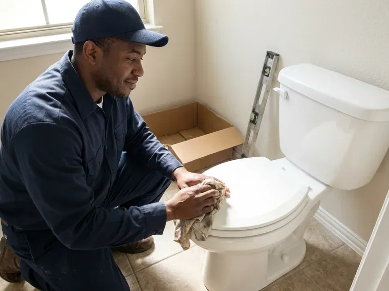
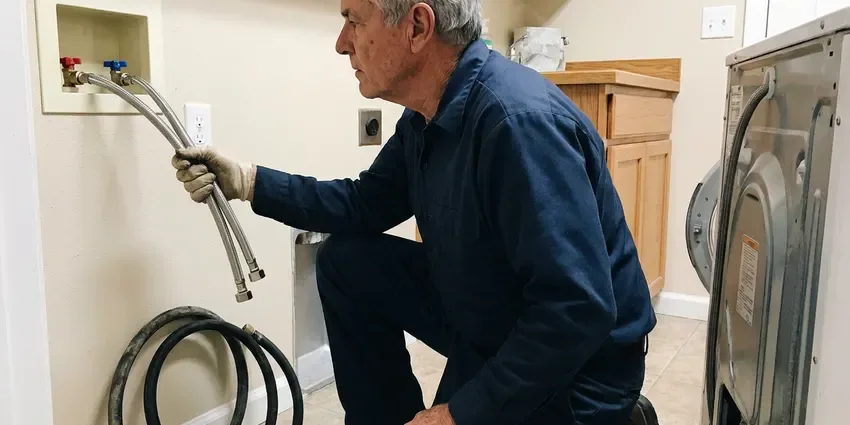
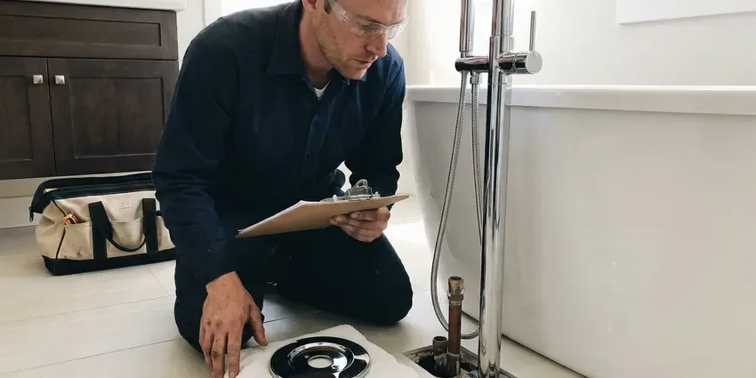
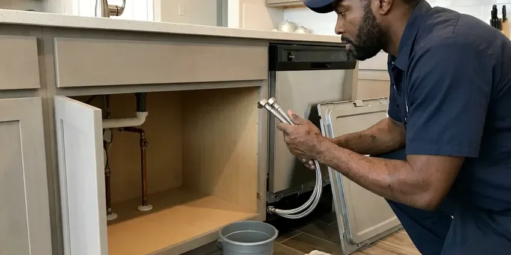

Drain Cleaning in Savannah, GA
Stubborn clog in Savannah, GA? HGR Plumbing runs the right size cable for the pipe and gets the drain moving again.
- Trained Drain Techs
- Written Drain Guarantee
- Camera Footage You Can Keep
- No Acid or Caustic Chemicals

Main Line Backing Up in Savannah, GA? We Can Be There Soon
Call today and a drain tech will give you a clear price before any cable goes in the line.
Your Hometown Drain Cleaning Crew in Savannah, GA
HGR Plumbing handles everything from one slow bathroom sink to a main line backing up into the tub. The first question is what is actually in the pipe. Wipes need a different head than roots, and grease needs a different one than scale, and we tell you how to keep that specific clog from returning.
Work we handle every week:
- Color drain camera inspections with video you keep
- Hydro jetting for grease and scale
- Cleanout access, including adding a cleanout where missing

Additional Drain Services Services in Savannah, GA
From stubborn kitchen clogs to main sewer backups, our drain services in Savannah, GA clear the line and keep it clear with camera-verified results.



Customers
Why Choose HGR Plumbing for Drain Cleaning in Savannah, GA?
Clear pricing is half the job. You get the number before the cable comes off the truck. If the camera turns up something bigger than a clog, we stop, show you the footage on the screen, and lay out what a spot repair or a liner would involve, then let you decide without any pressure to do it today.
- Proof on Camera, When a line keeps clogging, we run a camera so you can watch the cause on screen.
- Clean Work Area, Drop cloths, shoe covers and a wipe-down of the fixture are included in every drain call.
- Local Experience, Our techs work in Savannah every day and know how soil movement and scale affect buried pipe.
Citywide Coverage
We clean drains in every part of Savannah, from older neighborhoods with cast iron under the slab to newer subdivisions plumbed in PVC or ABS. Each truck is set up for old and new pipe. Nearly every call wraps up in one trip.
Experienced Team
Each technician is trained on cable machines, camera systems and safe chemical-free cleaning. They skip the jargon entirely. They never push a replacement when a cleaning will do the job, and they tell you so in plain words.
Safety-First Approach
We protect your fixtures and finished floors, and we never use harsh acids that eat older cast iron or soften plastic pipe. Cables and water, nothing caustic. Cables are guided through cleanouts or traps, not forced through a toilet that can crack.
Trusted Certified Savannah Plumbing Services Professionals
At HGR Plumbing, we take pride in licensed, certified plumbing services throughout Savannah, GA. Credentials matter in this trade. Every repair, install and maintenance visit follows strict safety and quality rules, and the plumbers doing the work carry recognized industry credentials.
Call Us Now PHCC Plumbing Contractor Recognition
PHCC Plumbing Contractor Recognition Better Business Bureau (BBB) Accreditation
Better Business Bureau (BBB) Accreditation Angi Certified Pro
Angi Certified Pro ISO 9001 Quality Management Certification
ISO 9001 Quality Management CertificationWhat Our Savannah, GA Drain Techs Clean
Tub and Shower Drain Cleaning in Savannah, GA
Showers clog slowly, then all at once. Hair builds a mat under the strainer. For tubs, the cable goes in through the overflow plate rather than the drain, which protects the tub surface, and we clear the trap and the branch beyond it, then run the shower for a few minutes to confirm it drains at full speed with no gurgle.

Hydro Jetting for Drains in Savannah
Jetting does what a cable cannot. Water at around 3,000 to 4,000 PSI scours the whole pipe wall. Cabling opens a path, but jetting strips the buildup off the walls. It works best on a kitchen or main line that keeps clogging every few months no matter how often it gets cabled.
Drain Repair or Drain Cleaning in Savannah
Not every clog is just a clog. Sometimes the pipe is broken. A camera run after cleaning shows whether the line is sound or whether a section has a crack, a belly or a separated joint, and if repair is needed you get an honest quote and the footage to back it up.
Emergency Drain Cleaning in Savannah, GA
Sewage coming up through a shower drain does not wait for Monday. We take emergency drain calls nights and weekends. The tech who shows up has a main line machine and a wet vac on the truck, so the first job is stopping the backup, and the second is getting enough flow back that you can use a toilet again before morning.
Restaurant and Shop Drains in Savannah, GA
Commercial kitchens fight fats, oils and grease every day. Even with an interceptor, grease builds up downstream. A regular jetting schedule, set by how much frying your kitchen does, keeps the line open, and we leave a service report you can show the health inspector or the landlord.
Kitchen Sink Drain Cleaning in Savannah
Coffee grounds and eggshells are a sink's worst enemies. They settle in low spots and act like sand. We cable from the trap arm or a cleanout and work the cutter back and forth until the head runs free, then checks the disposal and the dishwasher connection, since either one can push food into the line. Most kitchen sinks take less than an hour.
Sink Line Grease and Scale in Savannah
Kitchen lines clog with grease and food scraps that stick to the pipe and harden as they cool. Private wells still serve a large share of rural Georgia homes, and iron, sediment, and low pH can shorten the life of pumps, tanks, and copper lines. Scale gives that grease a rough surface to grab. Our drum machine goes in at the trap arm and scrapes the pipe back to its full diameter, then check the dishwasher air gap and finish with hot water.

Main Sewer Line Signs in Savannah
Several slow drains at once rarely means several clogs. One blockage in the main is the usual answer. On the call we ask about gurgling, a floor drain that is wet, and any smell outside near the cleanout, and those answers tell us to bring the main line machine and a camera instead of a small drum.
Local Drain Cleaning Near Me in Savannah, GA
Local plumbers learn the local pipe. We know which neighborhoods have clay sewers. Knowing the age of the housing tells us which cutter to load on the truck, and it means fewer surprises once we are in the line.
A good local drain company answers the phone and shows up in the window it gave you. We try to clear it every time. HGR Plumbing handles everything from a slow lav sink to a main line full of roots with equipment that fits each job, so you are not paying for a jetter on a hair clog.
HGR Plumbing at a Glance
- Licensed and insured plumbers serving Savannah, GA
- Same-day appointments and 24/7 emergency response
- Clear written estimates, no hidden fees
- 4.9-star rated by 357+ Georgia customers
Savannah Map
Savannah Information
- Population
- 147,748
- Area codes
- 912/478/843
- Service area
- Savannah and communities within 40 miles
- Nearby
- Brunswick, Augusta, Valdosta, Warner Robins
Drains in Savannah, GA slow down as scale and grease build on the pipe wall, and a line cleaned while it still drains costs far less than one cleared during a backup. Private wells still serve a sizable share of rural Georgia homes, and iron, sediment, and low pH can shorten the life of pumps, tanks, and copper lines.
Expert Services
Reach out to HGR Plumbing for honest, reliable plumbing from people who know the trade in Savannah, GA.
Our Specialized Plumbing Services in Savannah, GA
At HGR Plumbing, you get every kind of plumbing service from one company across Savannah, GA. We go from leak detection all the way to full system installations, for homes and commercial buildings, and we do it quickly at a fair price. Take a look at our core services below:


Plumbing Repair in Savannah

Professional bathroom plumbing, Savannah

Kitchen Plumbing in Savannah


How a Drain Cleaning Visit Works in Savannah, GA
Here is how a drain call goes with HGR Plumbing, from the phone call to the last test flush.
Call or Book Online
Call (770) 470-3778 and tell us which drains are slow. We ask a few questions to figure out where the clog likely is.
Find the Clog
Your tech checks the affected fixtures and finds the best access point. A camera goes in if the line keeps clogging.
Clear the Line
We run a drum machine, sectional cable or jetter sized for the pipe. We clean the pipe back to full width.
Frequently Asked Questions About Drain Cleaning in Savannah
Most clogs in Savannah cost $150 to $500 to clear. Where the clog sits matters more than anything. A main line that needs a camera run or jetting usually falls between $400 and $800, depending on access and how heavy the buildup is, and you get the number in writing before work starts.
Enzyme products are fine for upkeep. Caustic ones are another matter. If a caustic cleaner fails, the next person to open that drain is working in a trap full of chemical.
Not all. Sound pipe in decent shape handles jetting fine. We camera first on older pipe, because a jetter can blow through a pipe wall that is already paper thin.
A kitchen or bathroom sink usually takes 1 to 2 hours, including setup and cleanup. Mains add time. A main line blockage or a jetting job can run 2 to 4 hours, depending on access and how much buildup is in the pipe.
Our trucks carry RIDGID, Spartan Tool and Gorlitz machines. They are built for heavy daily work. We keep heads and cables for every common pipe size, so the tool fits the drain.
Professional equipment from RIDGID, Spartan Tool and Gorlitz. This is heavy-duty gear. We use these brands because they hold up to all-day use and cover everything from small lines to mains.
Usually yes. Plain clearing never does. When we install a cleanout or replace pipe, we get whatever permit your city requires and schedule the inspection.
Sometimes. Hair clogs close to the drain are a fair DIY job. Deeper blockages and repeat clogs need a real machine and a camera to see what is going on.
Hear From Customers Who Hired Our Plumbing Experts

Daniel K.
A pipe burst in the garage ceiling at 11 at night. Someone answered on the second ring, and the plumber was in my driveway about fifty minutes later. He shut off the main, cut out the split section, and had water back on before 2 am.
Emergency Plumbing · Augusta, GAMark T.
The floor drain in our office break room backed up every few weeks. The plumber ran a cable, then put a camera down and found roots at a joint about thirty feet out. Seeing it on the screen made the decision easy.
Drain Cleaning · Warner Robins, GAJessica T.
We were adding a gas range in a kitchen remodel and needed a new line run from the meter. The plumber pulled the permit, ran the pipe through the crawl space, and had it inspected and approved within the week.
Gas Line Repair · Macon, GADiane F.
My kitchen faucet had dripped for months and I finally got tired of hearing it at night. HGR Plumbing came out the next morning, replaced the cartridge and the O rings, and tightened a loose base that was letting water under the sink.
Faucet Repair · Savannah, GAEmily R.
The shutoff valve under our kitchen sink snapped off in my hand on a Sunday morning. HGR Plumbing had someone out by early afternoon. He replaced both angle stops with quarter turn valves and showed me where our main shutoff was, which I honestly did not know.
Plumbing Repair · Augusta, GAGreg S.
I manage a small strip center with six tenants. HGR Plumbing handles our annual backflow testing and fixed a recurring clog in the shared sewer line that had been backing into the nail salon. Their reports come in clean and on time.
Commercial Plumbing · Savannah, GA